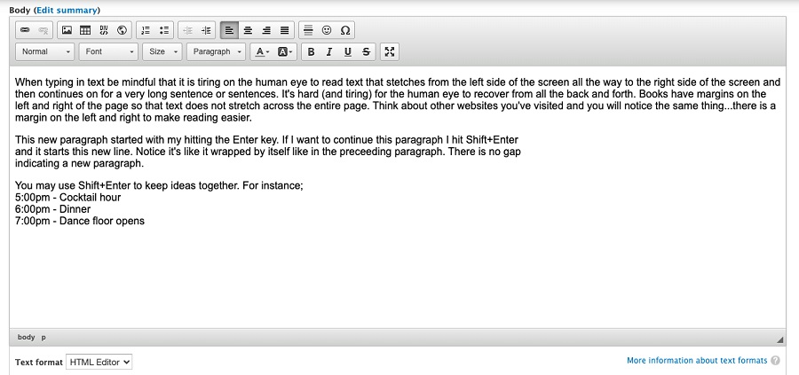

Intro to the WYSIWYG Editor
WYSIWYG (pronounced wiz-ee-wig) is an acronym that stands for What You See Is What You Get. It is a type of editing software that allows users to see and edit content in a form that appears as it would when displayed on an interface, webpage, slide presentation or printed document.
The WYSIWYG Editor is the editor presented to you when adding content for the Event Calendar, updating any HOG[SCAN] page or creating your own Basic page.
- Referencing the image below, this is the WYSIWYG Editor you use to enter content onto any HOG[SCAN] page.
The ribbon with the icons only displays when the Text format is set to
HTML Editor. 
- Reference the image below for a brief explaination of what each icon in the top row is for.
- Add / remove link - add a link in a basic page or calendar entry. If a link is currently there, the second icon will not be greyed out and you can remove the link.
- Image / Table - from left to right, insert an image from a directory onto the page, add a table to the page. The
DIV and iFrame are not anything you'd want to use when creating a basic page or calendar entry.
- List - Ordered / Unordered - create an ordered (each item in the list is numbered) or unordered (each item in the list has a circle in front of it) list
- Indentation increase/decrease - indent text. If text is indented the icon on the left will not be greyed out and you can decrease the indention
- Text maniuplation - from left to right, make the text ordered to the left side of the page, centered on the page, ordered to the right side of the page or have equal margins on the left and right side of the text
- Special characters - not anything you'd want to use on a basic page or calendar entry
- Reference the image below for a brief explanation of what each icon in the bottom row is for.
- Paragraph format - other than possibly adding a header to a basic page, for the most part this will not be used. No need for headers in calendar entries.
- Font name / family - should be left alone and use the HOGScan default font of Raleway
- Font size - if you want to make the text on your page slightly bigger only choose 16 from here.
- Text styles - other than possibly adding a header to a basic page, for the most part this will not be used. No need for header in calendar entries.
- Text highlight - should not be used. The icon on the left will change the font color, the icon on the right will change the color behind the font. These can make your text very difficult to see/read.
- Text format - from left to right, make the text Bold, Italics, Underline or Strikeout
- Fullscreen - click to make the editor fullscreen, click again to toggle it back

Creating a Web Page Tips
Web page design is a career unto itself. It is not something that can be taught in a short tutorial but don't let that hinder you. Anyone can create a pleasing page. Here are some things to keep in mind as you create a basic page or make event calendar entries.
- Sandbox - Use your development environment to practice building/creating your new basic page.
- Accessibility - While accessibility is a topic unto itself the shortened version is you want to avoid uninformative link phrases. Links are more useful when they make sense out of context. Authors should shy away from non-informative link phrases such as;
- click here
- here
- more
- read more
- link to ...
- info
As an example, the following three links go to the same location but only one is a best practice;
- Images - Keep images on your page at a reasonable size. No one likes to scroll left and right and up and down in order to see an image. Not everyone will be using a desktop computer to view your website, some will use an Apple® or Android™ tablet.
This is especially important when placing images in event calendar entries. A lot of people use their smartphone and the HOG[SCAN] smartphone app to view the calendar and a large image means a lot of scrolling just to see the text of the event.
- Tokens - Tokens are fine to use in basic pages. It helps to eliminate typo's and keeps information consistant. However, do not use tokens in event calendar entries. They will display when viewing the calendar with a computer or tablet but tokens do not get translated when viewing the calendar with the HOG[SCAN] smartphone app.
Enter versus Shift + Enter - This is easier seen rather than explained.
Hitting the Enter key will move the cursor down and begin a new paragraph.
Hitting the Shift + Enter keys causes a line break. The text continues on a new line, not a new paragraph. Reference the image below for a visual demonstration. 